第三部分 · 时变处理的因果推断 · Part III — Causal inference for time-varying treatments
第 20 章 · 处理-混杂反馈
Hernán MA, Robins JM（2020）. Causal Inference: What If. Chapter 20. 本页为中文全文翻译，附译注。
上一章把序贯可交换性（sequential exchangeability）列为识别时变处理因果效应的一个关键条件。假设我们有一项研究，其中最强形式的序贯可交换性成立：所测量的时变混杂因素足以有效估计任一处理策略的因果效应。接下来的问题是该用哪种混杂调整方法。这个问题的答案，凸显出时变处理因果推断中的一个关键难题：处理-混杂反馈（treatment-confounder feedback）。当存在处理-混杂反馈时，使用传统的调整方法反而会给效应估计带来偏倚。也就是说，哪怕我们掌握了有效估计任一处理策略平均因果效应所需的全部信息，通常也做不到。本章描述处理-混杂反馈的结构，以及传统调整方法为何会失效。
20.1 处理-混杂反馈的构成要素
再回想上一章讨论过的那个 HIV 感染者序贯随机化试验。研究中每个人在随访的第 k = 0, 1, 2 … K 个月都有处理 Ak（1：治疗，0：未治疗）和协变量 Lk 的数据，还有一个在第 K+1 个月测量健康状态的结局 Y。图 20.1 的因果图（与图 19.2 相同）展示了研究前两个月的情况。时变协变量 Lk 是时变混杂因素（confounder）。（和上一章一样，我们用这个不含删失的例子，以便集中精力讨论混杂。）
图 20.1 里还发生了别的事。不仅有一条从 CD4 细胞计数 Lk 指向处理 Ak 的箭头，还有一条从处理 Ak−1 指向未来 CD4 细胞计数 Lk 的箭头——因为接受 Ak−1 治疗会提高未来的 Lk。也就是说，混杂因素影响处理，处理又影响混杂因素。这便是处理-混杂反馈（见精细辨析 20.1）。
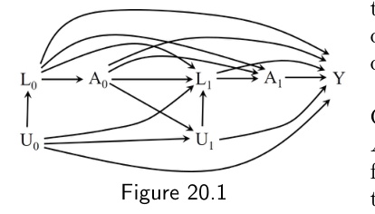
要注意，时变混杂可以没有处理-混杂反馈而单独存在。图 20.2 的因果图和图 20.1 一样，只是删掉了从处理 Ak−1 指向未来 Lk 和 Uk 的箭头。在这样一个因果图所代表的场景里，时变协变量 Lk 是时变混杂因素，但它们不受之前处理的影响。因此这里有时变混杂，却没有处理-混杂反馈。
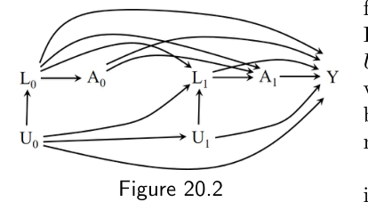
处理-混杂反馈给因果推断制造了一个有趣的难题。为了把问题说得最简明，我们把图 20.1 再简化一点。图 20.3 是图 20.1 能说明序贯随机化试验中处理-混杂反馈的最小子集，只含两个时间点。画这张图时，我们做了四处简化：
- 因为我们关心的是被 L1 混杂所引起的后果，就没费心放一个基线 CD4 细胞计数的节点 L0。只需设想处理 A0 是边际随机化（marginally randomized）的，而处理 A1 是在给定 L1 条件下随机化的。
- 未纳入未测量变量 U0。
- 没有从 A0 指向 A1 的箭头，这意味着处理的分配只用到了 L1 的信息。
- 没有从 A0、L1、A1 指向 Y 的箭头——如果处理对任何人的结局 Y 都没有因果效应，即成立"尖锐原假设"（sharp null），就正是这种情况。
这些简化都不影响下面的论证。更复杂的因果图不会给本章的讨论增添任何概念上的洞见，只会更难读。
现在假设处理对任何一个人的 Y 都没有效应，也就是说图 20.3 是正确的因果图，但研究者并不知道这一点。再假设我们拥有第 0 个月的处理 A0、第 1 个月的处理 A1、第 1 个月初的混杂因素 CD4 细胞计数 L1，以及随访结束时的结局 Y。我们想用这些数据，估计静态处理策略"始终治疗"（a0 = 1, a1 = 1）相对于静态策略"从不治疗"（a0 = 0, a1 = 0）对结局 Y 的平均因果效应，也就是 E[Ya0=1,a1=1] − E[Ya0=0,a1=0]。按照图 20.3，真实（但研究者未知）的平均因果效应是 0，因为从两个处理变量出发，沿着箭头方向都无法到达 Y。也就是说，你无论从 A0 还是 A1 出发，顺着箭头方向都走不到 Y。
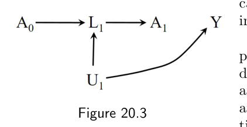
图 20.3 之所以能代表一个序贯随机化试验，是因为没有从未测量变量 U 直接指向处理变量的箭头。因此，正如上一章所讨论，我们应当能够利用关于 A0、L1、A1 和 Y 的观测数据，得出 E[Ya0=1,a1=1] − E[Ya0=0,a1=0] 等于 0 的结论。然而，正如下一节要解释的，当我们用分层、结局回归、匹配这类传统方法来对 L1 做调整时，通常并不能正确估计出这个因果效应。也就是说，在这个例子中，用这些方法去调整混杂因素 L1，通常会得到一个不等于 0 的效应估计，因而无效。
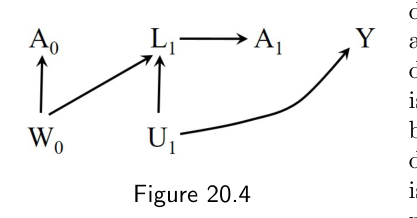
换句话说，当时变混杂因素与处理-混杂反馈同时存在时，传统方法无法正确调整这些混杂因素。哪怕我们拥有足以保证序贯可交换性的纵向数据，传统方法通常也无法给出任一处理策略因果效应的有效估计。相比之下，g 方法（g-methods）即使在存在处理-混杂反馈的情况下，也能恰当地调整时变混杂因素。
传统方法的这一局限，既适用于时变混杂因素受既往处理影响（如图 20.3）的情形，也适用于时变混杂因素与既往处理共享一个原因 W（如图 20.4，它是图 19.4 的子集）的情形。我们把图 20.3 和图 20.4（以及图 19.2 和图 19.4）都称作处理-混杂反馈的例子。下一节解释传统方法为何无法妥善应对处理-混杂反馈。
20.2 传统方法的偏倚
为了说明传统方法的偏倚，我们考虑一个（假设的）序贯随机化试验：32,000 名 HIV 感染者，两个时间点 k = 0 和 k = 1。基线时 A0 = 1 以 0.5 的概率随机分配。第 1 个月时 A1 随机分配，其概率只取决于第 1 个月初 CD4 细胞计数 L1 的取值——L1 = 0（高）时为 0.4，L1 = 1（低）时为 0.8。结局 Y 在随访结束时测量，它是 CD4 细胞计数、血清病毒浓度及其他临床指标的函数，Y 值越高代表健康越好。
表 20.1 展示了这个试验的数据。为了省地方，表中不是每人一行，而是 A0、L1、A1 的每一种取值组合一行。八种组合各自给出了受试者人数 N 和结局的均值 E[Y | A0, L1, A1]。于是第 1 行显示，2400 名 (A0 = 0, L1 = 0, A1 = 0) 者的均值为 E[Y | A0 = 0, L1 = 0, A1 = 0] = 84。在这个序贯随机化试验里，可识别性条件——序贯可交换性、可阳性性（positivity）、一致性（consistency）——都成立。试验设计上，A0 对 Y 没有混杂因素，而 L1 是 A1 对 Y 效应的唯一混杂因素，所以（在给定 L1 的条件下）序贯可交换性成立。检视表 20.1 可以看出可阳性性条件也满足，否则八行中必有一行人数为零。
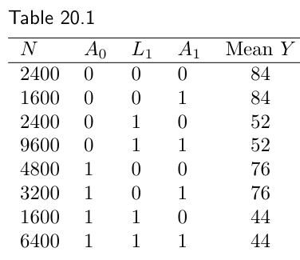
图 20.3 的因果图在尖锐原假设成立时描绘的正是这个序贯随机化实验。要检验表 20.1 的数据是否与图 20.3 一致，我们可以分别在既往协变量和处理的分层内，单独估计每个时不变处理 A0 和 A1 的平均因果效应，这些都应等于零。下面的计算我们忽略随机波动。
快速检视这张表就会发现，处理 A1 的平均因果效应在由 A0 和 L1 定义的四个层里确实都是零。以 4000 名 A0 = 0 且 L1 = 0 的个体为例（数据在表 20.1 的第 1、2 行）：在第 1 个月没接受处理者的结局均值 E[Y | A0 = 0, L1 = 0, A1 = 0] 是 84，接受了处理者的均值 E[Y | A0 = 0, L1 = 0, A1 = 1] 也是 84。所以差值
E[Y | A0 = 0, L1 = 0, A1 = 1] − E[Y | A0 = 0, L1 = 0, A1 = 0]
为零。因为可识别性条件成立，这个关联上的差值有效地估计了 (A0 = 0, L1 = 0) 这一层内的因果对比
E[Ya1=1 | A0 = 0, L1 = 0] − E[Ya1=0 | A0 = 0, L1 = 0]。
同理，很容易验证：比较第 3、4 行，第 5、6 行，以及第 7、8 行各自的均值，可分别得出在剩下的三层 (A0 = 0, L1 = 1)、(A0 = 1, L1 = 0)、(A0 = 1, L1 = 1) 中，处理 A1 对 Y 的平均因果效应也都为 0。
现在我们还能证明 A0 的平均因果效应也是 0。为此需要计算关联上的差值 E[Y | A0 = 1] − E[Y | A0 = 0]，由于随机化，它是对因果对比 E[Ya0=1] − E[Ya0=0] 的有效估计。第 0 个月接受治疗的那 16,000 人的结局均值 E[Y | A0 = 0] 是表 20.1 第 1、2、3、4 行均值的加权平均，等于 60；同理算出的 E[Y | A0 = 1] 也是 60。所以 A0 的平均因果效应为零。
加权平均值：E[Y | A0 = 0] = (16000×84 + 16000×84 + 16000×52 + 16000×52) / 32000 = 60；E[Y | A0 = 1] = (16000×76 + 16000×76 + 16000×44 + 16000×44) / 32000 = 60。
我们已经确认，当把 A0 和 A1 分别当作时不变处理来看时，它们（在给定既往条件下）的因果效应都是零。如果我们现在把联合处理 (A0, A1) 当作一个时变处理，去比较两种处理策略呢？比如，我们想比较"始终治疗"与"从不治疗"，也就是 (a0 = 1, a1 = 1) 对 (a0 = 0, a1 = 0)。因为可识别性条件成立，表 20.1 的数据应当足以有效估计这个效应。
由于策略的每个组成部分 a0 和 a1 各自的效应都是零，由 g-原假设定理（见技术要点 20.1）可知，平均因果效应 E[Ya0=1,a1=1] − E[Ya0=0,a1=0] 为零。可是，如果我们用常规的分析方法，从数据里得出的也是这个结论吗？为了回答这个问题，我们做两次数据分析。第一次不做混杂因素 L1 的调整，应当得到错误的效应估计。第二次通过分层对 L1 做调整。
1. 我们比较在两个时间点都接受治疗的 9600 人（表 20.1 第 6、8 行）与两个时间点都未治疗的 4800 人（第 1、3 行）的结局均值。分别为 E[Y | A0 = 1, A1 = 1] = 54.7，以及 E[Y | A0 = 0, A1 = 0] = 68.0。关联上的差值是 54.7 − 68 = −13.3，若作因果解读，就意味着两个时间点都不治疗好过两个时间点都治疗。这个分析给出了错误答案——一个非零的差值——因为 E[Y | A0 = a0, A1 = a1] 并不是 E[Ya0,a1] 的有效估计量。这里需要对混杂因素 L1 做调整。
E[Y | A0 = 1, A1 = 1] = (3200×76 + 6400×44) / 9600 = 54.7；E[Y | A0 = 0, A1 = 0] = (2400×84 + 2400×52) / 4800 = 68.0。
2. 我们通过分层对 L1 做调整。也就是在 L1 的各个水平内，比较两个时间点都治疗者与两个时间点都未治疗者的结局均值。以 L1 = 0 这一层为例。两个时间点都治疗者的均值 E[Y | A0 = 1, L1 = 0, A1 = 1] 为 76（第 6 行）；两个时间点都未治疗者的均值 E[Y | A0 = 0, L1 = 0, A1 = 0] 为 84（第 1 行）。关联上的差值为 76 − 84 = −8，若作因果解读，意味着在 L1 = 0 这一层里，两个时间点都不治疗好过都治疗。同理，在 L1 = 1 这一层里，差值 E[Y | A0 = 1, L1 = 1, A1 = 1] − E[Y | A0 = 0, L1 = 1, A1 = 0] 也是 −8。
什么？我们说过效应估计应该是 0，不是 −8。做了混杂调整的分析怎么会也给出错误答案？这个估计反映的，正是传统方法在存在处理-混杂反馈时调整混杂所带来的偏倚。下一节解释偏倚从何而来。
注意：因为效应在 L1 的两个层里都是 −8，无论怎么对层内效应做加权平均，都不可能得到正确的 0 值。
20.3 传统方法为何失效
表 20.1 展示了一个存在处理-混杂反馈的序贯随机化试验的数据，正如图 20.3 的因果图所描绘。尽管没有关于未测量变量 U1（免疫抑制水平）的任何数据，三个可识别性条件却全部成立：只要我们有混杂因素 L1 的数据，就不需要 U1。因此，正如第 19 章所讨论，我们应当能够正确估计涉及任何静态或动态处理策略的因果效应。可是上一节我们的两次分析，无论是否对 L1 做了调整，都没给出正确答案。
问题出在我们没有用正确的方法去调整混杂。分层（stratification）是常用的混杂调整方法，但它应付不了处理-混杂反馈。分层，就是在由混杂因素（本例中是 L1）定义的亚群——"层"——内部估计处理与结局之间的关联。因为变量 L1 只取两个值——CD4 细胞计数低时为 1，否则为 0——本例中就只有这样两层。要估计 L1 = l 者的因果效应，我们选取（也就是以之为条件，或在其上分层）总体中 L1 = l 的那个子集。
可是，当关联度量是在一个由既往处理 A0 所引起的变量 L1 的各层内计算时，分层可能带来意想不到的后果。图 20.5 显示，以 L1 为条件——它是一个碰撞因子（collider）——会打开路径 A0 → L1 ← U1 → Y。也就是说，分层在 L1 的各层内，诱导出处理 A0 与未测量变量 U1 之间的非因果关联，从而也诱导出 A0 与结局 Y 之间的关联。在 CD4 计数低（L1 = 1）的人里，正在治疗（A0 = 1）成了重症免疫抑制（U1 值高）的标志；在 CD4 水平高（L1 = 0）的人里，没治疗（A0 = 0）成了轻度免疫抑制（U1 值低）的标志。于是，分层的副作用就是诱导出处理 A0 与结局 Y 之间的关联。
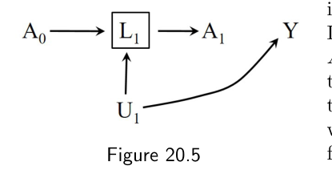
换句话说，分层消除了对 A1 的混杂，代价是给 A0 引入了选择偏倚（selection bias）。关联上的差值
E[Y | A0 = 1, L1 = l, A1 = 1] − E[Y | A0 = 0, L1 = l, A1 = 0]
即便如本例所示处理对任何人任何时间的结局都没有效应，也可能不等于 0。这个偏倚来自：我们通过对一个被（时变处理的某个成分 A0）所影响的变量 L1 做选择，从而选取了研究总体的一个子集。净偏倚的大小，取决于被消除的混杂与被制造的选择偏倚的相对强弱。
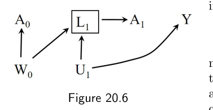
严格地说，传统方法的偏倚不仅会在混杂因素受既往处理影响时出现（随机化试验或观察性研究中都如此），也会在混杂因素与既往处理共享一个未测量原因 W0 时出现（观察性研究中）。在图 20.6 描绘的观察性研究里，以碰撞因子 L1 为条件会打开路径 A0 ← W0 → L1 ← U1 → Y。正因如此，我们把图 20.3 和图 20.4 这两个（用观测数据无法区分的）场景都称作处理-混杂反馈的例子。
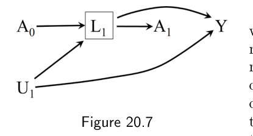
我们用来说明传统方法偏倚的那些因果图都很简单，只描绘了处理对结局没有因果效应的情形。然而，在存在处理-混杂反馈时，哪怕处理有非零效应（如图 20.7），对混杂因素做条件化同样会引入偏倚。从 A0、A1 或 L1 指向 Y 的箭头，改变不了一个事实：对 L1 做条件化，制造出了 A0 与 Y 之间一种没有因果解释的关联（亦见精细辨析 20.2）。此外，我们的因果图只有两个时间点、有限个节点，但传统方法的偏倚同样会出现在具有多个时间点和多个变量的高维数据里。事实上，在多个时间点受既往处理影响的时变混杂因素越多，出现大偏倚的可能性就越大。
一般而言，只有当处理各成分 Ak 的联合效应能够被同时且无偏地估计时，处理策略效应的有效估计才有可能。如我们所见，即便拥有所有时变混杂因素的数据，用分层也可能做不到这一点。
20.4 传统方法为何无法修补
我们已经说明，在存在处理-混杂反馈时，分层不能用作混杂调整方法。但其他传统方法呢？比如，我们本可以用参数化结局回归（parametric outcome regression），而不是非参数的分层，来调整混杂。结局回归能在普通分层失败的地方成功吗？
这个问题在高维数据场景下尤为要紧，因为高维时我们根本做不了像上一节那样简单的分层分析。考虑图 20.5 下生成的数据。处理 Ak 发生在两个月 k = 0, 1，意味着只有 22 = 4 种静态处理策略 ā。可当处理 Ak 发生在多个时间点 k = 0, 1 … K 时，我们就没法用一张表列出所有处理取值的组合了。如果（实践中并不少见）K 的量级是 100，那么就有 2100 种静态处理策略 ā，这是个惊人地大、远超任何研究样本量的数字。若再把动态策略算进来，处理策略的总数还要大得多。
正如从第 11 章起我们就一直在说的，当存在许多可能的处理策略 ā 时，要估计涉及 E[Yā] 的平均因果效应，我们就需要建模。为此，我们需要对处理史 ā 对均值结局 Y 的剂量-反应函数（dose-response function）做出假设。一种可能是假设处理策略 ā 的效应，随每种策略下累积治疗量的增加而成线性增长。在这个假设下，凡是指定了恰好三个月治疗的策略，效应都相同，无论这三个月发生在随访的前三个月、最后三个月，还是别的什么时候。为建模付出的代价，是又多了一重威胁——剂量-反应函数设定错误可能危及估计的有效性。
然而，付出这个代价，并没有换来任何针对传统方法失效的保护。在存在处理-混杂反馈时，回归建模不可能消除基于分层的常规方法的偏倚，因为回归本身就是一种基于分层的常规方法。举例说，假设我们有图 20.5 下生成的数据。定义累积治疗量 cum(Ā) = A0 + A1，它可以取 3 个值：0（两个时间点都未治疗）、1（只在第 1 月或只在第 2 月治疗）、2（两个时间点都治疗）。我们关心的处理策略于是可表达为"始终治疗" cum(ā) = 2，与"从不治疗" cum(ā) = 0，平均因果效应即 E[Ycum(ā)=2] − E[Ycum(ā)=0]。同样，任何有效的方法都应估计出这个差值为 0。
在均值结局 E[Y | Ā, L1] 线性依赖于协变量 cum(Ā) 的假设下，我们可以拟合结局回归模型
E[Y | Ā, L1] = θ0 + θ1 cum(Ā) + θ2 L1。
关联上的差值 E[Y | cum(Ā) = 2, L1] − E[Y | cum(Ā) = 0, L1] 等于 θ1 × 2（模型正确地假设了这个差值在 L1 = 1 与 L1 = 0 两层中相同）。所以有人可能会想把 θ1 × 2 解读为"始终治疗"相对于"从不治疗"在协变量 L1 各层内的平均因果效应。但这种因果解读是站不住脚的，因为图 20.5 显示，对 L1 做条件化，诱导出了处理 cum(Ā) 的一个成分 A0 与结局 Y 之间的关联。这意味着，即便真实因果效应为零、且 E[Y | Ā, L1] 的回归模型设定正确，θ1——从而均值上的关联差值——仍可能非零。类似的论证也适用于匹配（matching）。在存在处理-混杂反馈时，需要 g 方法来恰当地调整时变混杂因素。
20.5 对既往处理的调整
在讨论 g 方法之前，还有一件事。为了简洁，我们此前描述处理-混杂反馈时用的都是简化因果图，其中既往处理并不直接作用于后续处理。也就是说，图 20.3 和图 20.4 都没有包含从 A0 指向 A1 的箭头。我们现在考虑更一般的情况：既往处理可能直接作用于后续处理。
举个例子，假设我们 HIV 研究中的医生，在做第 k 个月是否开药 Ak 的决定时，会用到既往治疗史 Āk−1 的信息。为了表示这种情况，我们往图 20.3 和图 20.4 里加一条从 A0 指向 A1 的箭头，如图 20.8 和图 20.9 所示。
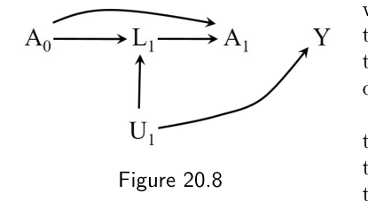
图 20.8 和图 20.9 表明，在存在处理-混杂反馈时，仅以 L1 为条件，不足以阻断处理 A1 与结局 Y 之间的所有后门路径。确实，以 L1 为条件会打开图 20.8 中的路径 A1 ← A0 → L1 ← U1 → Y，以及图 20.9 中的路径 A1 ← A0 ← W0 → L1 ← U1 → Y。当然，不管有没有处理-混杂反馈，只要既往处理对结局有非零效应（如图 20.10 的因果图），以既往治疗史为条件就总是必须的。在图 20.10 下，处理 A0 是处理 A1 效应的一个混杂因素。
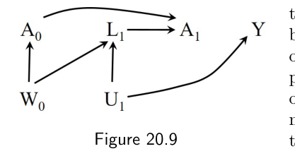
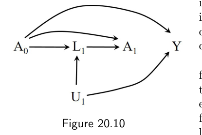
因此，第 k 步的序贯可交换性，通常要求在 k 之前对治疗史 Āk−1 做条件化；只以协变量 L 为条件是不够的。这就是为什么在本章和上一章里，所有表示序贯可交换性的条件独立语句，都是以治疗史为条件的。
既往处理在估计时不变处理的效应时也扮演重要角色。假设我们关心的是时不变处理 A1——而不是涉及 A0 和 A1 的某个处理策略——对 Y 的效应。（有时 A1 的效应被称为时变处理 Ā 的"短期效应"。）那么，如果存在处理-混杂反馈，不对既往处理 A0 做调整通常会造成选择偏倚；如果既往处理 A0 直接作用于结局 Y，则会造成混杂。换句话说，差值 E[Y | A1 = 1, L1] − E[Y | A1 = 0, L1] 即便在处理 A1 对任何人的结局 Y 都没有效应时（如图 20.8–20.10），也可能不为零。在实践中，对时不变处理做因果推断时，那些比较处理"当前使用者"（A1 = 1）与"非使用者"（A1 = 0）的分析，就可能产生偏倚。为避免这种偏倚，可以调整既往治疗史，或者把分析限制在具有某一特定治疗史的人群中。这正是时不变处理"新使用者设计"（new-user design）背后的思路：把分析限制在既往从未使用过该治疗的人群中。
如果能够正确调整既往处理，分析就不必限制在新使用者之中。
要求对既往处理做调整，在既往处理被错误测量时，还有一层额外的偏倚含义。正如第 9.3 节所讨论，一个被错误测量的混杂因素，可能使效应估计产生偏倚，偏高或偏低都有可能。在我们的 HIV 例子里，假设研究者无法调阅受试者的医疗记录，而只能通过问卷询问来确定既往治疗。由于并非所有受试者都能准确回忆自己的治疗史，处理 A0 是被错误测量的。研究者掌握的是错误测量变量 A0*，而不是真实的 A0。要在图 20.8–20.10 中描绘这个场景，我们加一条从真实处理 A0 指向错误测量 A0* 的箭头，这表明以 A0* 为条件，无法阻断那些经由 A0 连接 A1 与 Y 的偏倚路径。于是研究者会得出：即便在调整了 A0* 和 L1 之后，A1 与 Y 之间仍存在关联——尽管 A1 对 Y 其实没有效应。
因此我们发现，当时变处理时，与一种普遍看法相反，治疗的错误测量——即便测量误差是独立且非差异性的——也可能在原假设下造成偏倚。这个偏倚之所以产生，是因为既往处理是后续处理效应的一个混杂因素，即便既往处理对结局没有任何因果效应。此外，在备择假设下，这种不完美的偏倚调整，可能导致对效应的夸大估计。